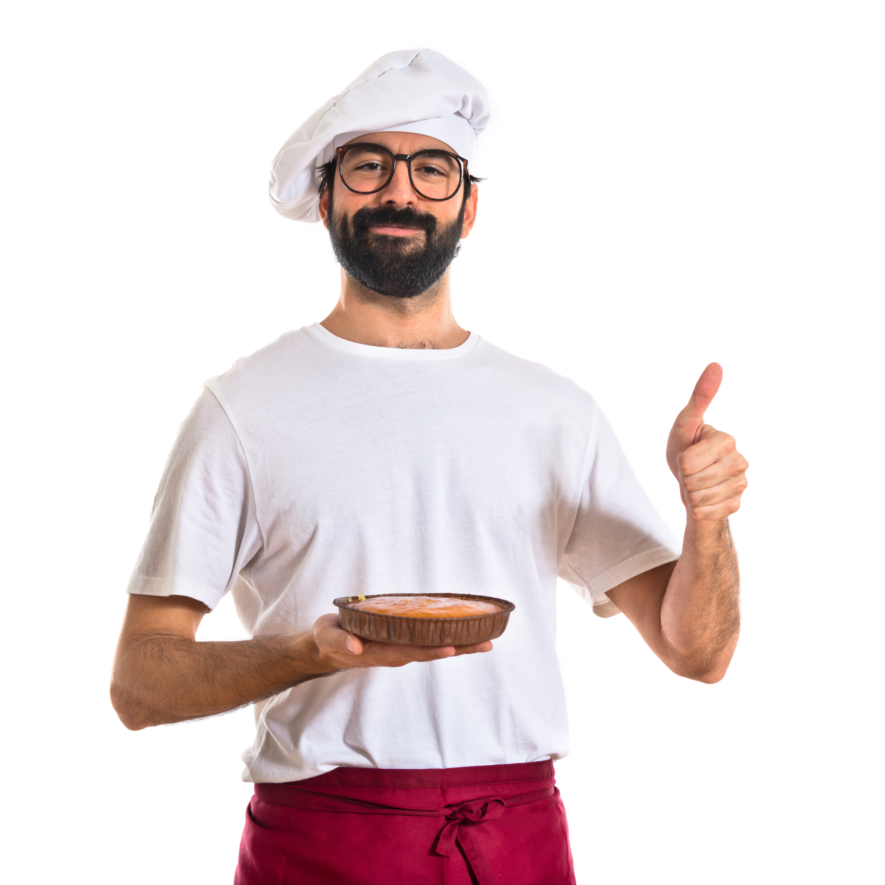

Conheça o Chefe
Com uma trajetória de mais de 20 anos na culinária, nosso chefe é especialista na fusão dos sabores italianos com a alma da cozinha brasileira.

Chef Giovanni Moretti
Nascido em Nápoles e radicado no Brasil desde jovem, Giovanni Moretti é o coração da nossa cozinha. Ele já passou por renomados restaurantes da Europa e do Brasil, trazendo para nosso cardápio pratos tradicionais com um toque autoral.
Premiado internacionalmente, Giovanni acredita que a simplicidade, quando feita com técnica e paixão, é o segredo de um prato inesquecível. Seu tempero é conhecido por equilibrar sofisticação e conforto, como uma boa mesa em família.